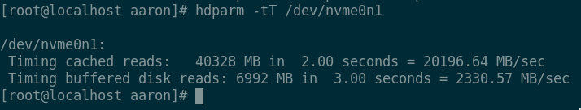

https://twitter.com/NovakAron/status/1093493650850529281
Old system configuration
INTEL DQ67SW
Intel s1155 Core i7-2600 3,40GHz/8MB BOX
Corsair DDR3 Vengeance CMZ16GX3M4A1600C9 16GB KIT
CORSAIR CX CMPSU-500CXV2EU 500W
Corsair SATA3 2.5" 120GB Force GT (CSSD-F120GBGT-BK)
Samsung SSD 850 PRO 256GB
ATX CORSAIR Graphite Series CC600T Black
New system configuration
Asus PRIME Z390M-PLUS (micro-ATX, LGA 1151, Intel Z390)
Intel Core i9-9900K 3,6 GHz (16 MB) LGA 1151 CPU Box
32 GB DDR4 SDRAM 2400 MHz Corsair Vengeance LPX Black
S3 Zalman S3
C0024366 Chieftec Smart 600 W
1 TB Samsung 970 EVO NVMe SSD (M.2, 2280, PCIe)
Cooler Master Hyper TX3I EVO

Environment + test method
Fedora 29 + KDE, graphical environment is on during the tests, SELinux is off.
default ext4 filesystem
Two execution of each type of tests, no restart between them.
PHP compilation
http://be2.php.net/get/php-7.3.2.tar.bz2/from/this/mirror
./configure
time make -j8
None of the values are 1st executions below.
i7-2600:
real 0m14.746s
user 0m39.725s
sys 0m20.366s
real 0m12.139s
user 0m41.810s
sys 0m21.300s
i9-9900k:
real 0m5.239s
user 0m23.931s
sys 0m7.906s
with -j16:
real 0m4.400s
user 0m25.926s
sys 0m8.645s
PHP CLI execution
http://www.php-benchmark-script.com/download.php?file=bench.zip
i7-2600:
Start : 2019-02-11 16:30:54
Server : @
PHP version : 7.2.14
Platform : Linux
--------------------------------------
test_math : 0.923 sec.
test_stringmanipulation : 0.924 sec.
test_loops : 2.574 sec.
test_ifelse : 1.955 sec.
--------------------------------------
Total time: : 6.376 sec.
Start : 2019-02-11 16:32:10
Server : @
PHP version : 7.2.14
Platform : Linux
--------------------------------------
test_math : 0.871 sec.
test_stringmanipulation : 0.918 sec.
test_loops : 2.588 sec.
test_ifelse : 1.956 sec.
--------------------------------------
Total time: : 6.333 sec.
i9-9900k:
Start : 2019-02-12 07:55:04
Server : @
PHP version : 7.2.14
Platform : Linux
--------------------------------------
test_math : 0.509 sec.
test_stringmanipulation : 0.478 sec.
test_loops : 1.160 sec.
test_ifelse : 0.910 sec.
--------------------------------------
Total time: : 3.057 sec.
Start : 2019-02-12 07:55:22
Server : @
PHP version : 7.2.14
Platform : Linux
--------------------------------------
test_math : 0.474 sec.
test_stringmanipulation : 0.477 sec.
test_loops : 1.165 sec.
test_ifelse : 0.904 sec.
--------------------------------------
Total time: : 3.02 sec.
MySQL DB dump importation
MariaDB 10.3.11-MariaDB, ini file: https://pastebin.com/VxYfEDVF
Example SQL file: http://downloads.mysql.com/docs/sakila-db.tar.gz
time (cat sakila-db/sakila-schema.sql sakila-db/sakila-data.sql | mysql -uroot sqlbench)
i7-2600:
real 0m2.014s
user 0m0.069s
sys 0m0.018s
real 0m1.959s
user 0m0.070s
sys 0m0.014s
i9-9900k:
real 0m0.735s
user 0m0.039s
sys 0m0.016s
real 0m1.003s
user 0m0.043s
sys 0m0.012s
Elm compiling + test
https://github.com/gizra/drupal-elm-startercd client && rm -rf elm-stuff/build-artifacts/ && time elm-test src/elm/TestRunner.elm
As the command suggests, the numbers below are not from first executions also.
i7-2600
real 0m26.216s
user 1m2.774s
sys 0m58.504s
real 0m27.237s
user 1m6.485s
sys 1m0.024s
i9-9900k:
real 0m16.446s
user 1m7.030s
sys 1m31.302s
real 0m16.267s
user 1m3.905s
sys 1m31.990s
Bonus: Extreme Tuxracer FPS
Resolution: 1920*1080
Version: 0.75
The content of .etr/options.txt:
[fullscreen] 1
[res_type] 0
[detail_level] 4
[language] en_GB
[sound_volume] 90
[music_volume] 20
[framerate] 0
[forward_clip_distance] 75
[backward_clip_distance] 20
[fov] 60
[bpp_mode] 0
[tree_detail_distance] 20
[tux_sphere_divisions] 10
[tux_shadow_sphere_div] 3
[course_detail_level] 75
[use_papercut_font] 1
[ice_cursor] 1
[full_skybox] 0
[menu_music] start_1
[credits_music] credits_1
[config_music] options_1
[use_quad_scale] 0
i7-2600: ~120fps
i9-9900k: ~500fps
Conclusion
As expected, the general single thread performance is twice as fast compared to the old configuration, the icing on the cake that in some areas, the new configuration brings even an order of magnitude improvement, we could say that after 8 years, it made a lot of sense to upgrade.
- A hozzászóláshoz regisztráció és bejelentkezés szükséges